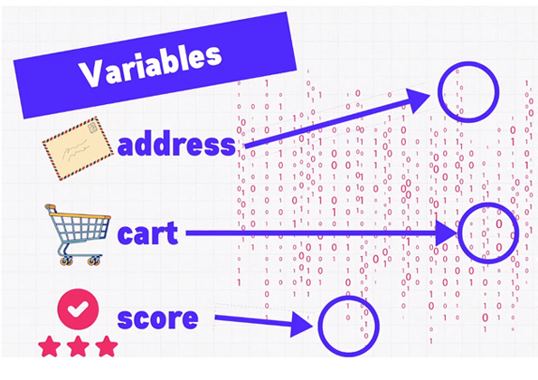
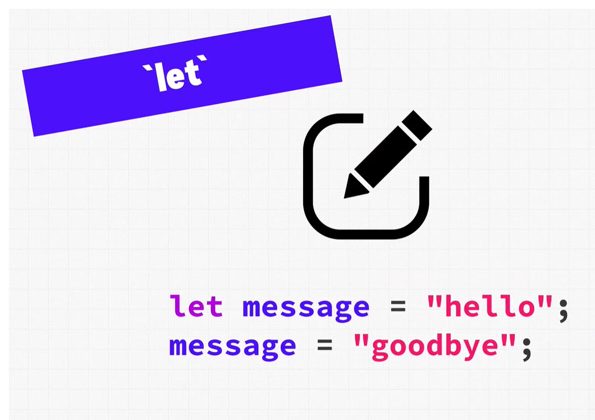
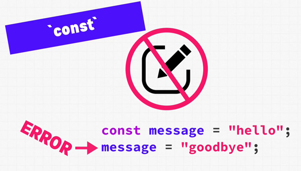
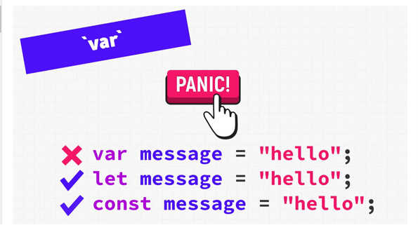

In the context of programming, a variable is a fundamental concept used to store and manage data.
Variables are like containers or storage locations that hold values, which can be manipulated, changed, and referenced within a program.
They are an essential building block for writing code and working with data
Variables
When we are writing programs, we are going to work with lots of kinds of data, maybe an address, an online shopping cart, or
score in a video game. Maybe even all three in the same application.
The computer puts these data somewhere in the memory. For us, the exact location of the data in the memory is not a concern.

Variables allows us to assign useful names to these pieces of data and will also
automatically keeping track of where they exist in memory. This freexe you up to work on your code
instead of trying to remember where everything exists.
So if we want to access a player score in a video game, we can just use these score variable
and TypeScript will go into memory and pull it out for us.
Different programming languages may have slightly different rules and conventions for working with variables, but the fundamental concept remains consistent across most languages. Understanding how to declare, assign,
and use variables is a fundamental skill in programming, and it's a key part of managing data and building software applications.
Variables work as follows inside a program:
let
Declaration:
To create a variable binding, we need to use a keyword (we start with 'let'). let allows us
to reassign data to that binding. Later this allows us to easily make modifications to that variable when
we need to.

So, whenever you have a situation where you need to reassign data, back to the same variable, we'll be using
the let keyword to do that.
For example, in TypeScript, you can declare a variable like this:
let age: number;
Here, age is the variable name, and number is the data type, indicating that age will store numeric values.
const
We can also use the const keyword. The const keyword in programming is used to declare a constant,
which is a variable that cannot be reassigned a new value after its initial assignment. It's a way to create variables whose values
should remain fixed throughout the execution of a program.
The const keyword provides benefits in terms of code clarity, predictability, and preventing unintentional value changes.
We just cannot reassign it. So using an equal sign won't work, but other methods will still allow the const
to be updated. So const shouldn't be confused with the imutable. The data can still be changed, we just
can't assing entirely new data to it.

var

This is the only time we'll mention this keyword because you should never use it under any circumstances.
It's a legacy keyword left over from the early JavaScript days and it has some very unconventional behovior.